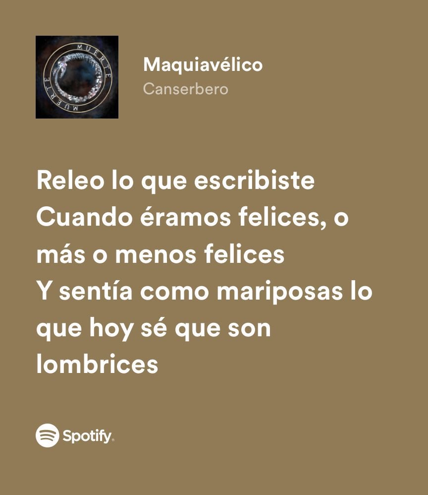
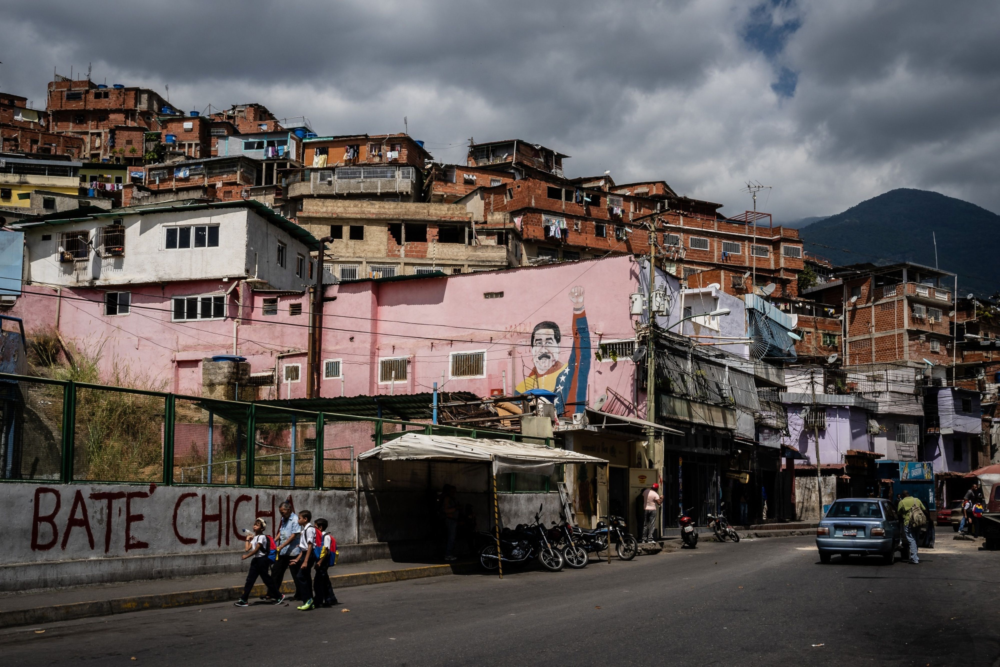

Canserbero
el rey del rap de Venezuela
Tirone José González Orama
fue el mejor exponente del rap en español .
Canserbero como era llamdo artisticamente nacio en Caracas venezuela el 11 de marzo de 1988, pero de niño lo llevaron a vivir en Maracay , el pequeño tirone perdio a su madre a los 9 años y a los 12 a su hermano mayor . Desde ese momento se crio con su padre , todo esto cambio la mentalidad de tirone y empezo a escuchar musica critica y pesada a los 13 años empeso a rapear y ganarce el respeto .
.jpeg)
Teoria de su muerte
Un misterio ... ¿fue el gobierna?
Murio en Maracay el 20 de enero de 2015
su muerte fue un misterio , se creia que sufria de esquisofrenia pero solo fue una mentira para evadir las miradas de las personas , y no se fijaran que su meurte tienes muchos misterios sin resolver . muchas peronas creen que fue el gobierno por las fuertes satiras que escribia , ademas estaba levantando al pueblo en una sola vos y se creen que hay mas implicados . Si quieres saber mas del tema .
.jpeg)

canserbero
en la mitologia es el gran perro del infierno , quien cuida las almas de los muertos para que no escapen del infierno.
temas
-
Querer querernos
Habla de dos personas que estan echas el uno para el otro y la cama lo demuestra . -

Maquiavelico
habla de como el amor puede doler despues de acabarse y recordar todo siempre... -
.jpeg) Es epico
Es epico
este tema habla de un joven que por venganza mata a un malandro (maton) que mata a su hermano, se va al infierno por lo sucedido y en ese lugar se enfrenta con Satanas en una batalla de rap . -
Jeremias 17-5
Habla de la venganza y la traicion. -
Visiones
este tema entra en lo mas delicado de Venezuela , habla de los problemas internos del pais.
albumes
Vida Muerte Guia para la accion Can-Zoo indigos Apa y Can Codigos de barrio Give me 5 Y sub albumes
Influencias

.jpeg)
.jpeg)
.jpeg)
Follow Me
Subscribe
Enter your e-mail below and get notified on the latest blog posts.